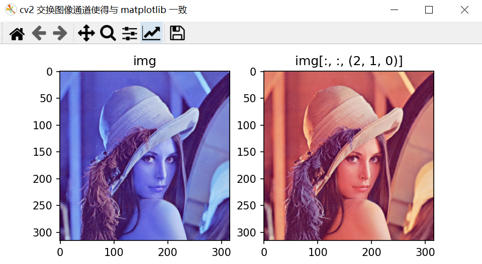
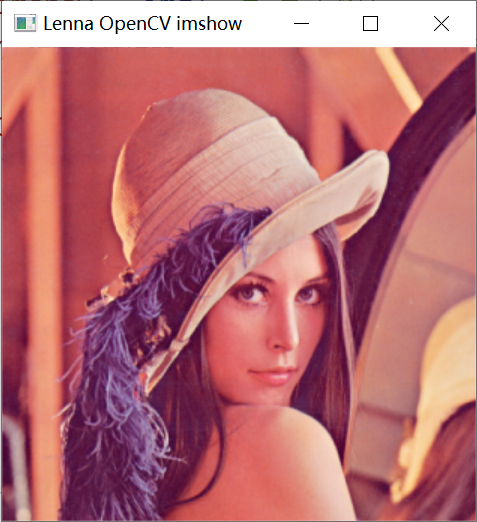
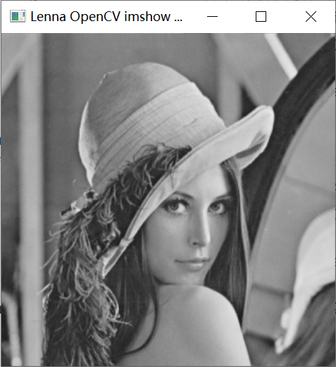
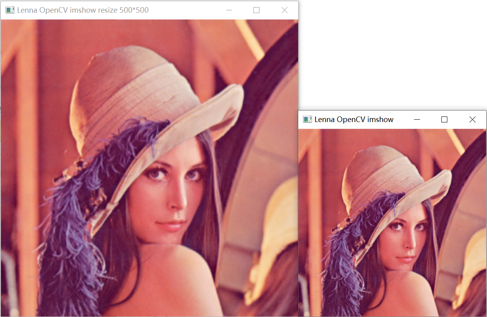
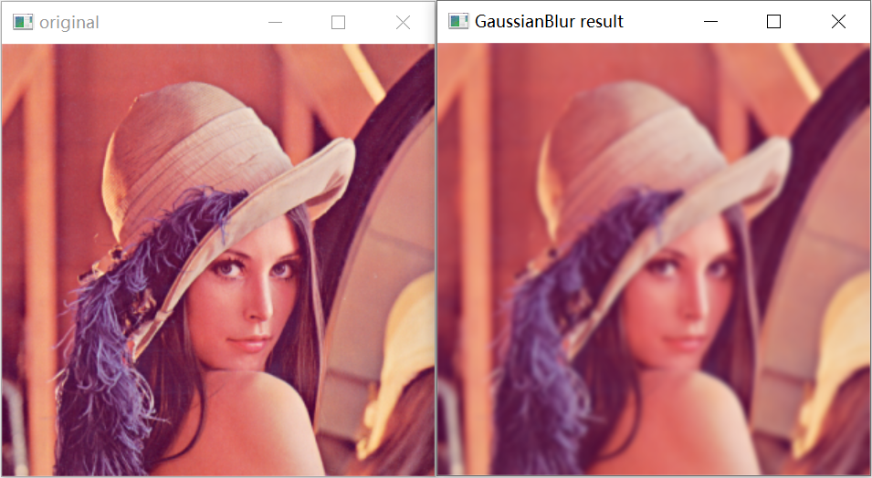
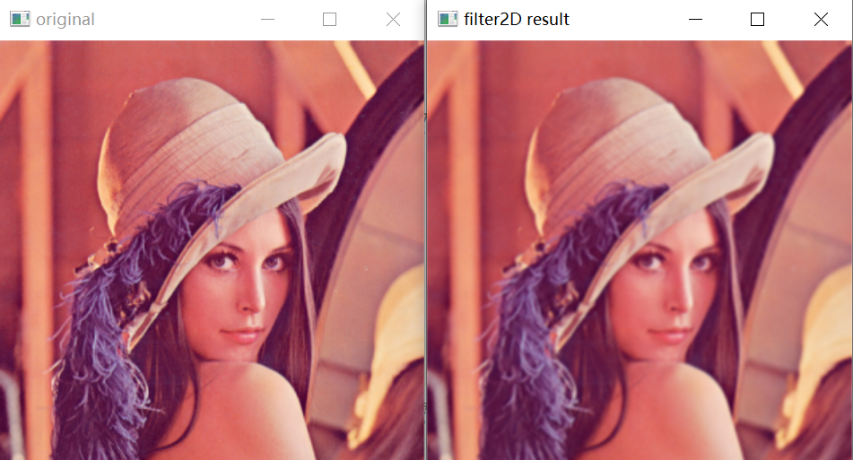
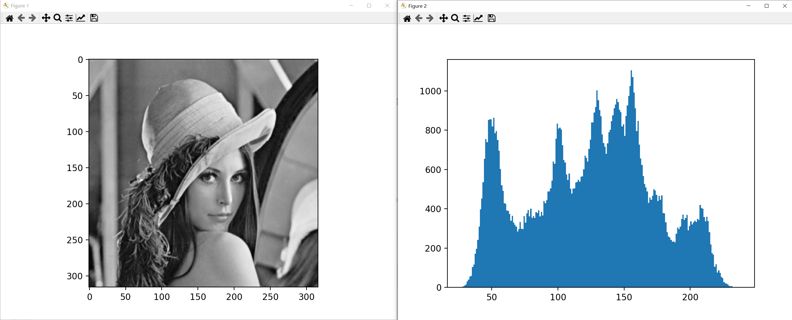

OpenCV 使用
Python下OpenCV的使用
安装OpenCV及其扩展模块
pip install opencv-python
pip install opencv-contrib-python cv2交换图像通道使得与matplotlib一致
众所周知 cv2 读取的颜色通道为 BGR，而不是广泛使用的 RGB，因此在使用matplotlib 进行绘制 cv2 读取的内容时，首先要进行颜色通道交换。
import cv2
import matplotlib.pyplot as plt
img_path = r'./Lenna.jpg'
img = cv2.imread(img_path)
f, axes = plt.subplots(1, 2, dpi=150, num=f'cv2 交换图像通道使得与 matplotlib 一致')
axes[0].imshow(img)
axes[0].set_title('img')
axes[1].imshow(img[:, :, (2, 1, 0)]) # 等同于 axes[1].imshow(img[:, :, ::-1])
axes[1].set_title('img[:, :, (2, 1, 0)]') # axes[1].set_title('img[:, :, ::-1]')
图片的加载、显示、保存
参考
示例
import cv2
img = cv2.imread(r"./Lenna.jpg") # 默认色彩格式读取
if img is not None: # 判断图像读取是否成功
cv2.imshow("Lenna OpenCV imshow", img) # 显示图片, winname 里有中文会乱码
cv2.imwrite(r"./Lenna_opencv_save.jpg", img) # 保存图片
cv2.waitKey(0) # 等待按键，防止窗口一闪而过就关了
cv2.destroyWindow("Lenna OpenCV imshow")
img = cv2.imread(r"./Lenna.jpg", 0) # 将图像读取为单通道的灰度图像
if img is not None: # 判断图像读取是否成功
cv2.imshow("Lenna OpenCV imshow GRAYSCALE", img) # 显示图片, winname 里有中文会乱码
cv2.imwrite(r"./Lenna_opencv_save.jpg", img) # 保存图片
cv2.waitKey(0) # 等待按键，防止窗口一闪而过就关了
cv2.destroyWindow("Lenna OpenCV imshow")

读取图片 cv2.imread 函数
retval = cv2.imread(filename[, flags])| 参数 | 含义 |
|---|---|
| retval | 读取到的图片数据，若读取失败，则为None |
| filename | 需要读取图片的路径，可以使用相对路径，也可以使用绝对路径 |
| flags | 可选，指定加载图片的方式，默认为1 |
flags常用值如下，可采用第一列参数或者第三列的数值，它们是等价的。更多参数，请参见OpenCV官方文档：OpenCV ImreadModes
| 参数 | 含义 | 数值 |
|---|---|---|
| cv2.IMREAD_UNCHANGED | 保持原格式不变 | -1 |
| cv2.IMREAD_GRAYSCALE | 将图像读取为单通道的灰度图像 | 0 |
| cv2.IMREAD_COLOR | 将图像读取为3通道的BGR图像，该值是默认值 | 1 |
显示图片 cv2.imshow 函数
cv2.imshow(winname, mat) | 参数 | 含义 |
|---|---|
| winname | 显示图像的窗口的名字，不建议用中文（目前中文会乱码） |
| mat | cv2.imread读取到的图像矩阵，或者其他方式获取的图像矩阵 |
cv2.waitKey函数
cv2.waitKey往往搭配cv2.imshow使用，如果不使用在用cv2.imshow时窗口会一闪而过就关闭了
retval = cv2.waitKey([delay])| 参数 | 含义 |
|---|---|
| retval | 表示返回值。如果没有按键被按下，则返回−1；如果有按键被按下，则返回该按键的 ASCII 码。 |
| delay | 表示等待键盘触发的时间，单位是ms。当该值是负数或者零时，表示无限等待。该值默认为0。 |
cv2.destoryWindow函数
cv2.destroyWindow(winname)cv2.destroyWindow与cv2.waitKey()结合使用，winname即上述创建需要关闭的窗口名称
cv2.destroyAllWindows()cv2.destroyAllWindows()可关闭所有窗口
保存图片cv2.imwrite函数
retval = cv2.imwrite(filename, img[, params])| 参数 | 含义 |
|---|---|
| retval | 是返回值。如果保存成功，则返回逻辑值真（True）；如果保存不成功，则返回逻辑值假（False） |
| filename | 是要保存的目标文件的完整路径名，包含文件扩展名，例如'./tmp/abc.jpg' |
| img | 是被保存图像的名称 |
| params | 是保存类型参数，是可选的 |
图像缩放 cv2.resize函数
参考
dst = cv2.resize(src, dsize[, fx[, fy[, interpolation]]])| 参数 | 含义 |
|---|---|
| dst | 代表输出的目标图像，该图像的类型与src相同，其大小为dsize（当该值非零时），或者可以通过src.size()、fx、fy计算得到。 |
| src | 需要缩放的图像 |
| dsize | 代表指定输出图像的大小 格式为元组： (new_width, new_height) |
| fx | 代表水平方向的缩放比例 |
| fy | 代表垂直方向的缩放比例 |
| interpolation | 代表插值方式 |
注意：参数
dsize和参数fx,fy不同时使用，如果指定参数dsize的值，则无论是否指定了参数fx,fy，都由参数dsize指定目标图像的大小情况一：通过参数
dsize指定那么就代表将原图像缩放到这个dsize = (new_width, new_height)指定的大小
情况二：通过参数
fx,fy指定当
dsize为None时，dsize由fx,fy计算，dsize = Size(round(fx * src.cols), round(fy * src.rows))；
常见的interpolation插值方式如下，更多参数，请参见OpenCV官方文档，InterpolationFlags：
| 参数 | 含义 |
|---|---|
| cv2.INTER_NEAREST | 最临近插值 |
| cv2.INTER_LINEAR | 双线性插值(默认方式) |
| cv2.INTER_CUBIC | 三次样条插值 |
示例
import cv2
img = cv2.imread(r"./Lenna.jpg") # 默认色彩格式读取
if img is not None: # 判断图像读取是否成功
img_resize = cv2.resize(img, (500,500))
cv2.imshow("Lenna OpenCV imshow", img) # 显示图片, winname 里有中文会乱码
cv2.imshow("Lenna OpenCV imshow resize 500*500", img_resize) # 显示图片, winname 里有中文会乱码
cv2.waitKey(0) # 等待按键，防止窗口一闪而过就关了
cv2.destroyWindow("Lenna OpenCV imshow")
cv2.destroyWindow("Lenna OpenCV imshow resize 500*500")
dst与src坐标对应关系
原始图像src与cvc2.resize()后图像dst坐标对应关系
得出方式
首先易知双线性插值坐标关系
cvc2.resize()认为每个像素点代表该格子的中心，则有
图像平滑处理
参考
高斯滤波 cv2.GaussianBlur
dst = cv2.GaussianBlur(src, ksize, sigmaX[, dst[, sigmaY[, borderType]]])| 参数 | 含义 |
|---|---|
| src | 需要处理的图像，即原始图像。它能够有任意数量的通道，并能对各个通道独立处理。图像深度应该是CV_8U、CV_16U、CV_16S、CV_32F或者CV_64F中的一种。 |
| ksize | 滤波核的大小 |
| sigmaX | 卷积核在水平方向上（X 轴方向）的标准差，其控制的是权重比例 |
| sigmaY | 卷积核在垂直方向上（Y 轴方向）的标准差 |
| 如果 sigmaX 和 sigmaY 都是 0，则通过 ksize.width 和 ksize.height 计算得到。 其中： sigmaX = 0.3×[(ksize.width-1)×0.5-1] + 0.8 sigmaY = 0.3×[(ksize.height-1)×0.5-1] + 0.8 |
|
| borderType | 是边界样式，该值决定了以何种方式处理边界。一般情况下，使用默认值即可。更多请参见OpenCV官方文档：BorderTypes |
示例
import cv2
img_o = cv2.imread(r"./Lenna.jpg") # 默认色彩格式读取
if img_o is not None: # 判断图像读取是否成功
img_r = cv2.GaussianBlur(img_o, ksize=(9, 9), sigmaX=0, sigmaY=0)
cv2.imshow("original", img_o) # 显示原始图像
cv2.imshow("GaussianBlur result", img_r) # 显示高斯滤波后图像
cv2.waitKey() # 等待按键，防止窗口一闪而过就关了
cv2.destroyAllWindows() # 关闭所有窗口
2D卷积
dst = cv2.filter2D(src, ddepth, kernel[, dst[, anchor[, delta[, borderType]]]]) | 参数 | 含义 |
|---|---|
| src | 需要处理的图像，即原始图像。它能够有任意数量的通道，并能对各个通道独立处理。图像深度应该是CV_8U、CV_16U、CV_16S、CV_32F或者CV_64F中的一种 |
| ddepth | 是处理结果图像的图像深度，一般使用-1表示与原始图像使用相同的图像深度 |
| kernel | 是卷积核，是一个单通道的数组。这个kernel就是自己自定义的 |
| anchor | 是锚点，其默认值表示当前计算均值的点位于核的中心点位置。一般使用默认值即可。 |
| delta | 是修正值，它是可选项。使用默认值即可。 |
| borderType | 是边界样式，该值决定了以何种情况处理边界，通常使用默认值即可。更多请参见OpenCV官方文档：BorderTypes |
示例
import cv2
import numpy as np
img_o = cv2.imread(r"./Lenna.jpg") # 默认色彩格式读取
if img_o is not None: # 判断图像读取是否成功
kernel = np.array([[1, 1, 1], [1, 2, 1], [1, 1, 1]], dtype=np.float32) / 10 # 自定义卷积核
img_r = cv2.filter2D(img_o, -1, kernel)
print(f'kernel = \n{kernel}')
cv2.imshow("original", img_o) # 显示原始图像
cv2.imshow("filter2D result", img_r) # 显示filter2D后图像
cv2.waitKey() # 等待按键，防止窗口一闪而过就关了
cv2.destroyAllWindows() # 关闭所有窗口输出
kernel =
[[0.1 0.1 0.1]
[0.1 0.2 0.1]
[0.1 0.1 0.1]]
直方图
参考
matplotlib.pyplot.hist方式呈现
- matplotlib.pyplot.hist(x, bins=None, range=None, density=False, weights=None, cumulative=False, bottom=None, histtype='bar', align='mid', orientation='vertical', rwidth=None, log=False, color=None, label=None, stacked=False, *, data=None, **kwargs)[source]
bins: 直方图横轴密度
range: 数据分布范围
import cv2
import matplotlib.pyplot as plt
img = cv2.imread(r"./Lenna.jpg", 0) # 将图像读取为单通道的灰度图像
if img is not None: # 判断图像读取是否成功
plt.figure(dpi=200)
plt.imshow(img, cmap='gray')
data_ravel = img.ravel() # 展成一维
plt.figure(dpi=200)
plt.hist(data_ravel, bins=data_ravel.max() - data_ravel.min())
plt.show()
形态学操作
参考
✔️ 包括膨胀、腐蚀、开运算和闭运算等形态学操作
✔️ OpenCV函数：cv2.erode(), cv2.dilate(), cv2.morphologyEx()
膨胀
pass
腐蚀
pass
开运算
pass
闭运算
pass